16. Memoria de Calculo Excel#
from IPython.display import display, HTML
display(HTML("<style>.jp-Cell-input {display:none}</style>"))
from pdf2image import convert_from_path
paginas = convert_from_path("Memoria_Calculo.pdf",poppler_path=r"C:\Users\ruben\Downloads\Release-26.02.0-0\poppler-26.02.0\Library\bin")
display(HTML("<style>.jp-Cell-input {display:none}</style>"))
from IPython.display import display
for pagina in paginas:
display(pagina)
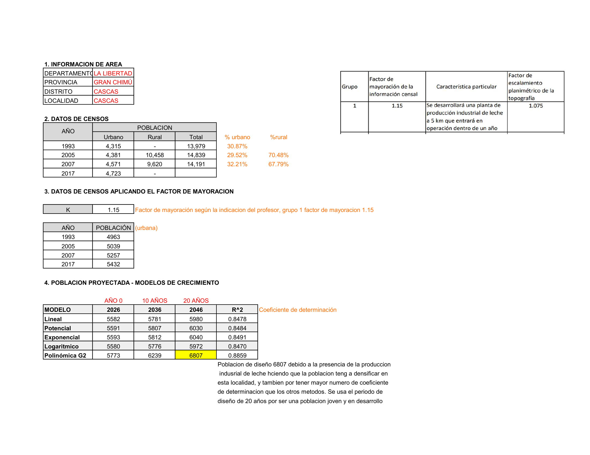
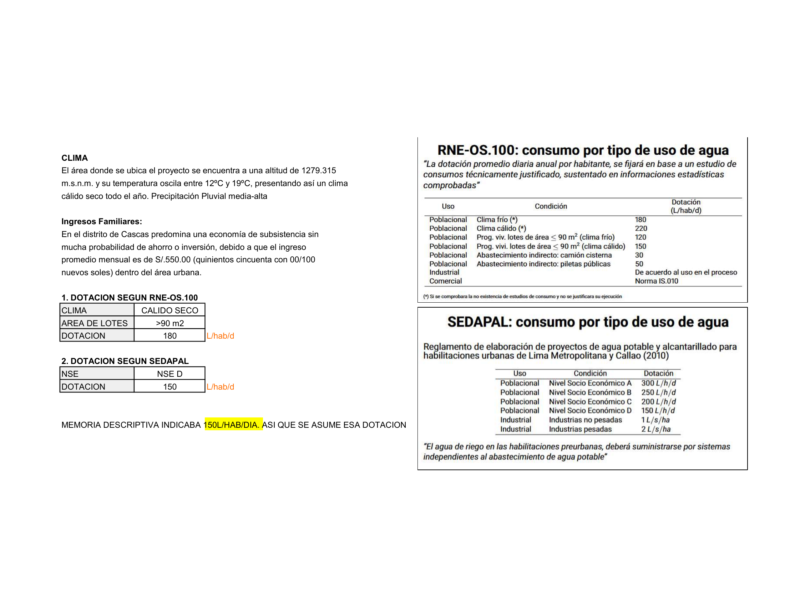
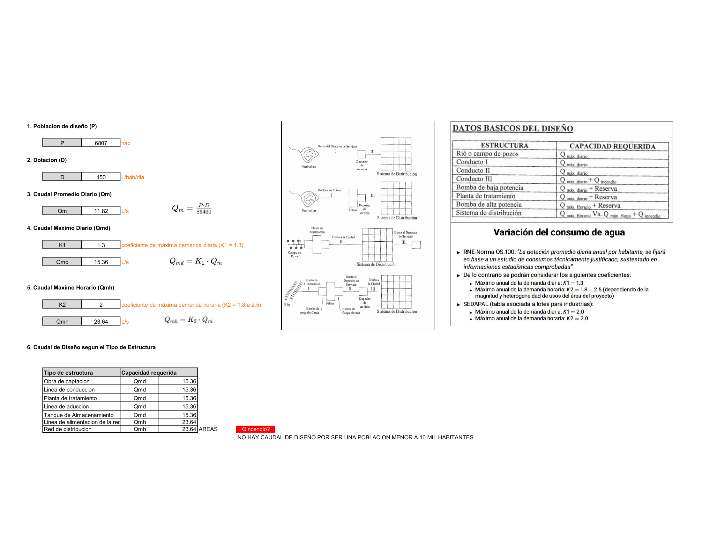
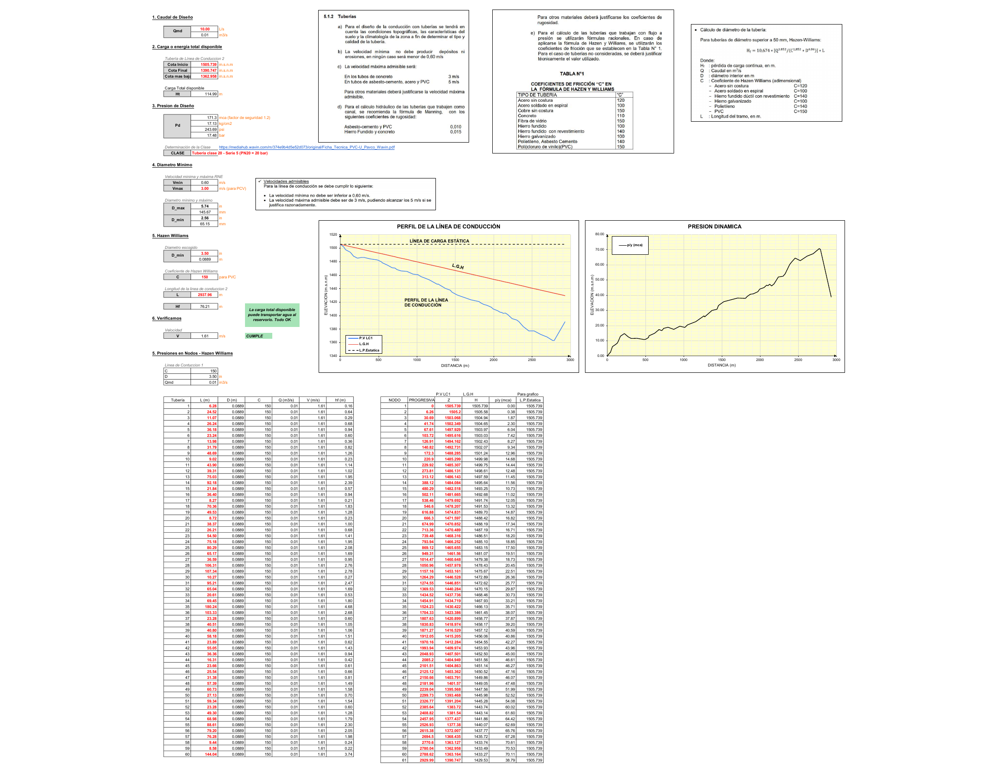
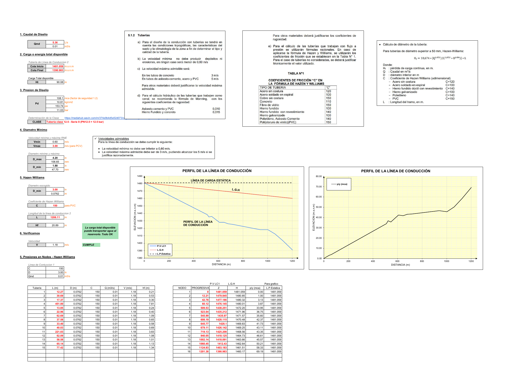
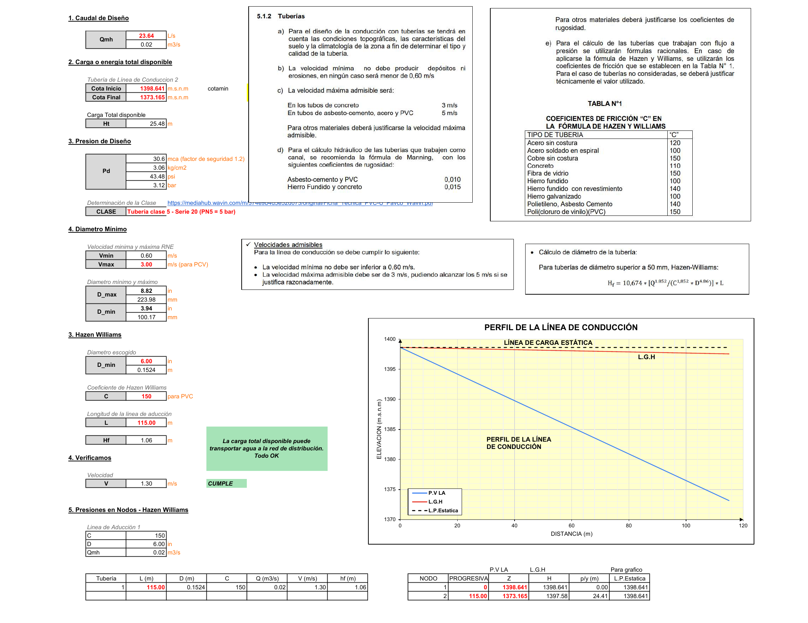
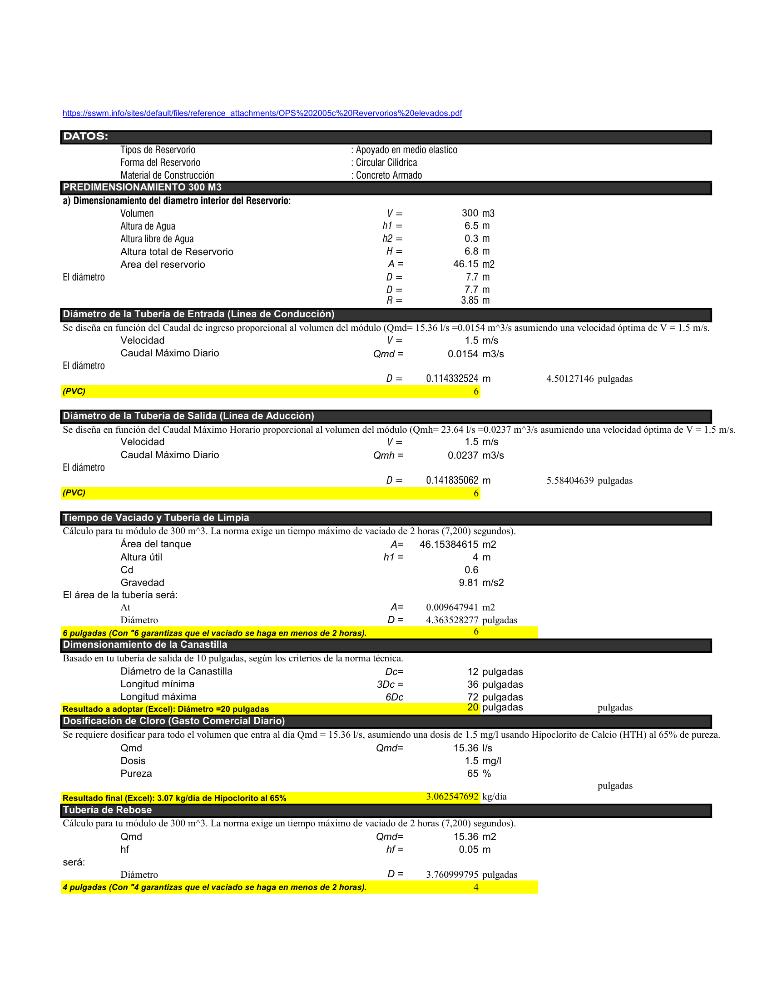
Modelos Estadísticos - Población Futura#
paginas = convert_from_path("MODELOS_ESTADISTICOS.pdf",poppler_path=r"C:\Users\ruben\Downloads\Release-26.02.0-0\poppler-26.02.0\Library\bin")
display(HTML("<style>.jp-Cell-input {display:none}</style>"))
from IPython.display import display
for pagina in paginas:
display(pagina)
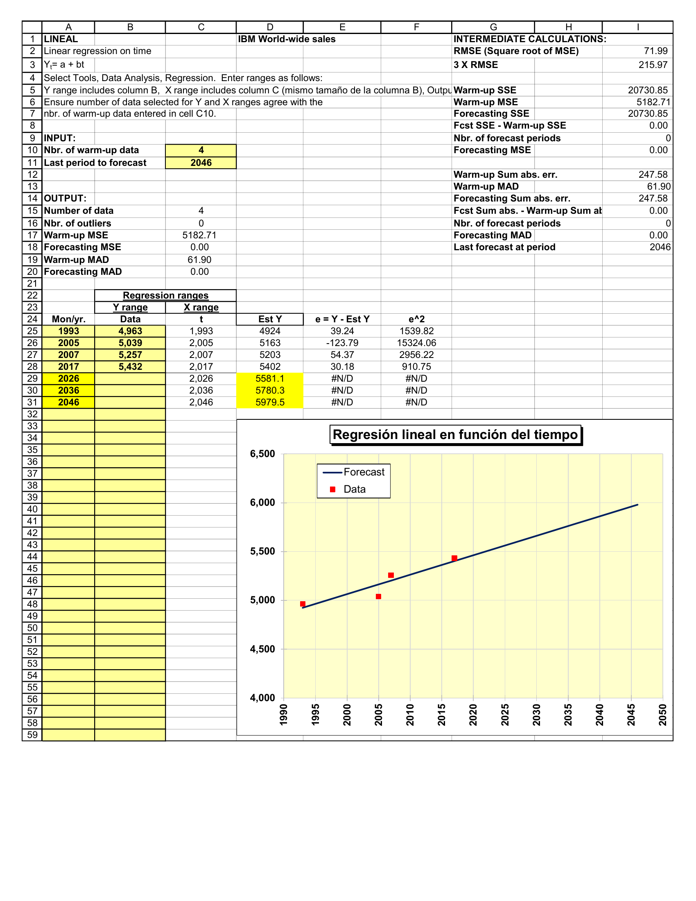
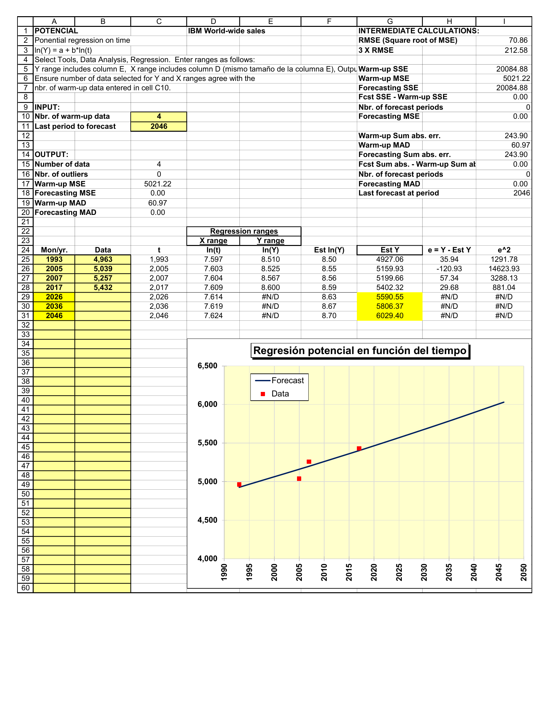
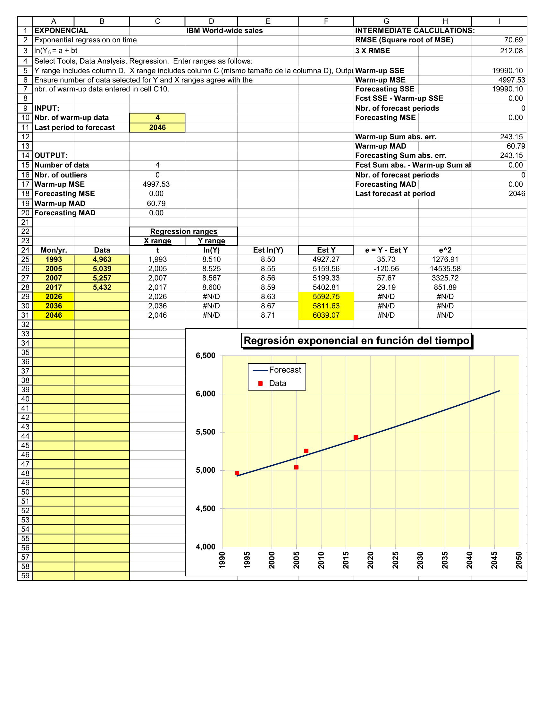
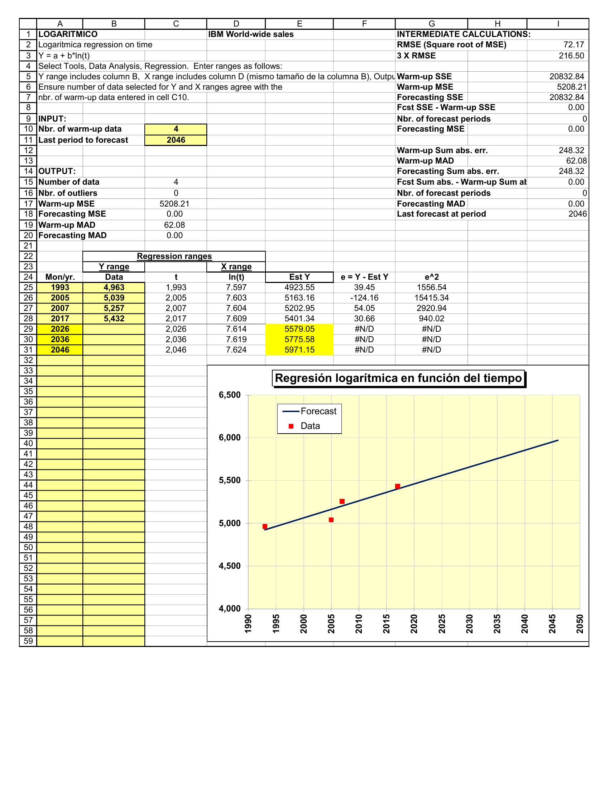
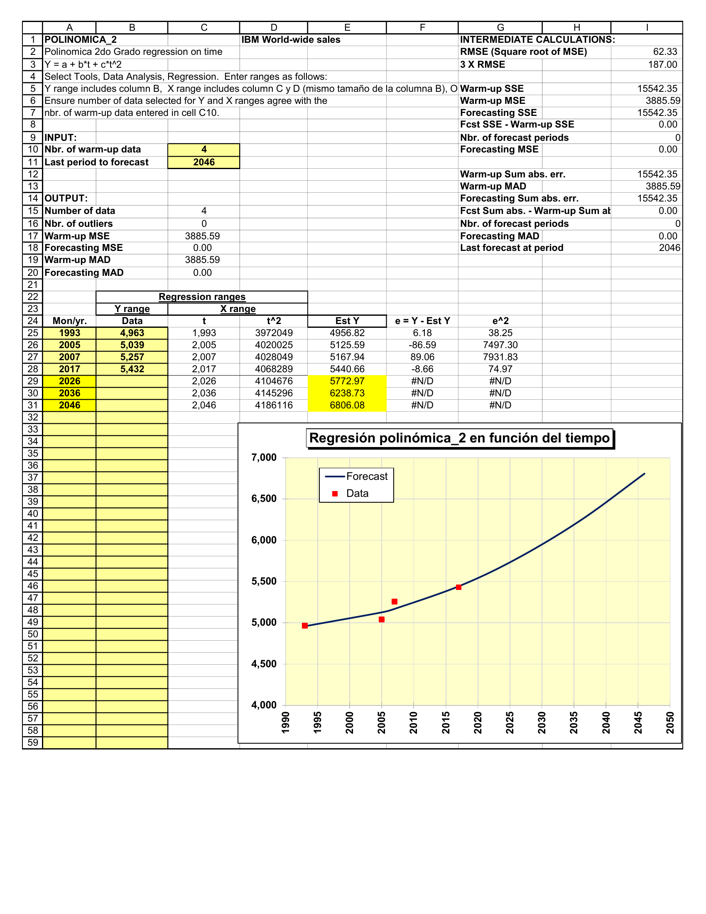